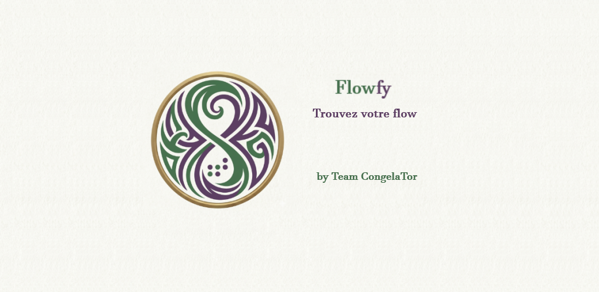

Flow For You. Trouvez le flow qui vous convient.
Flowfy vous aide à organiser vos activités pour progresser plus efficacement.
Inspirée des principes de la méthode Pomodoro, Flowfy vous permet de créer vos propres activités, de les découper en blocs personnalisés et de les enchaîner naturellement grâce aux notifications.
Que vous souhaitiez travailler, réviser, apprendre un instrument, pratiquer un sport, dessiner ou simplement avancer sur vos projets personnels, Flowfy s'adapte à votre rythme.
Flowfy n'impose aucune méthode rigide.
Créez vos propres enchaînements d'activités, ajustez les durées selon vos besoins et trouvez votre flow.